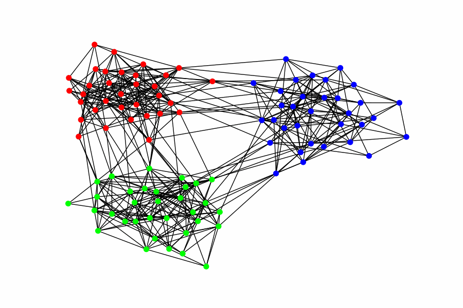
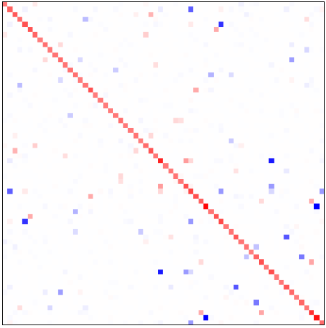
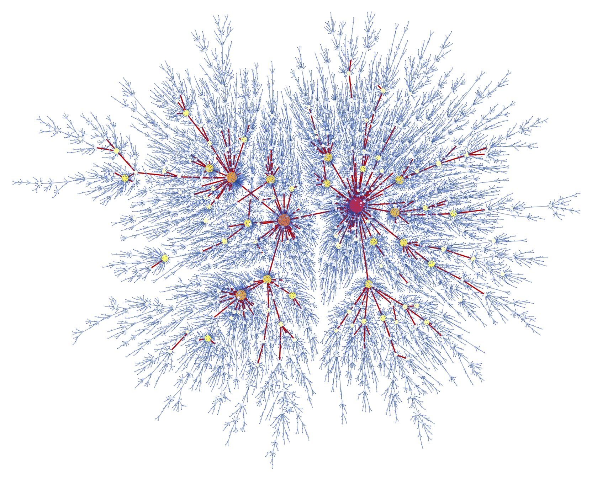
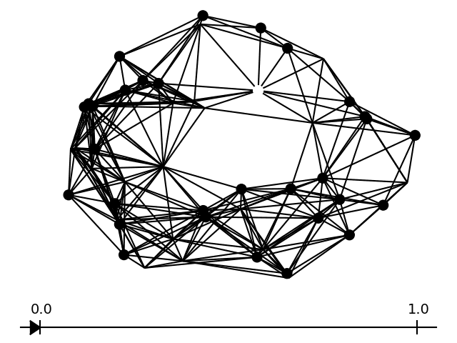

My research focuses on statistics related to graph-structured data.
During my thesis, I developed and studied tools for multi-scale graph comparisons
based on heat diffusion and topological data analysis.
These tools come with statistical guarantees that ensure the asymptotic validity of two-sample tests.
Implementing these methods allowed me to apply them to practical problems,
particularly in machine learning and neural network classifiers.
Currently, I am exploring various aspects of graph data compression.
This includes work on graph inference through a compressive learning method and, more recently,
investigating methods to accelerate community detection algorithms using coarsening techniques.
|  |
PASCO (PArallel Structured COarsening): an overlay to speed up graph clustering algorithms, 2024. With R. Vaudaine, T. Vayer, P. Borgnat, R. Gribonval, P. Gonçalves, M. Karsai Clustering the nodes of a graph is a cornerstone of graph analysis and has been extensively studied. However, some popular methods are not suitable for very large graphs: e.g., spectral clustering requires the computation of the spectral decomposition of the Laplacian matrix, which is not applicable for large graphs with a large number of communities. This work introduces PASCO, an overlay that accelerates clustering algorithms. Our method consists of three steps: 1- We compute several independent small graphs representing the input graph by applying an efficient and structure-preserving coarsening algorithm. 2- A clustering algorithm is run in parallel onto each small graph and provides several partitions of the initial graph. 3- These partitions are aligned and combined with an optimal transport method to output the final partition. The PASCO framework is based on two key contributions: a novel global algorithm structure designed to enable parallelization and a fast, empirically validated graph coarsening algorithm that preserves structural properties. We demonstrate the strong performance of PASCO in terms of computational efficiency, structural preservation, and output partition quality, evaluated on both synthetic and real-world graph datasets. |
|  |
Compressive Recovery of Sparse Precision Matrices, 2023. With T. Vayer, R. Gribonval, P. Gonçalves [arxiv]
We consider the problem of learning a graph modeling the statistical relations of the \(d\) variables of a dataset with \(n\) samples \(\mathbf{X} \in \mathbb{R}^{n \times d}\).
Standard approaches amount to searching for a precision matrix \(\boldsymbol\Theta\) representative of a Gaussian graphical model that adequately explains the data.
However, most maximum likelihood-based estimators usually require storing the \(d^{2}\) values of the empirical covariance matrix, which can become prohibitive in a high-dimensional setting. |
|  |
Eve, Adam and the Preferential Attachment Tree, 2023. With A. Contat, N. Curien, P. Lacroix and V. Rivoirard Published in Probability Theory and Related Fields. [journal] [arxiv] We consider the problem of finding the initial vertex (Adam) in a Barabasi--Albert tree process \( (\mathcal{T}(n) : n \geq 1) \) at large times. More precisely, given \( \varepsilon>0 \), one wants to output a subset \(\mathcal{P}_{ \varepsilon}(n) \) of vertices of \(\mathcal{T}(n)\) so that the initial vertex belongs to \(\mathcal{P}_ \varepsilon(n)\) with probability at least \(1- \varepsilon\) when \(n\) is large. It has been shown by Bubeck, Devroye & Lugosi (2017), refined later by Banerjee & Huang (2023), that one needs to output at least \(\varepsilon^{-1 + o(1)}\) and at most \(\varepsilon^{-2 + o(1)}\) vertices to succeed. We prove that the exponent in the lower bound is sharp and the key idea is that Adam is either a ``large degree" vertex or is a neighbor of a ``large degree" vertex (Eve). |
|  |
Heat diffusion distance processes: a statistically founded method to analyze graph data sets, 2023. Published in J Appl. and Comput. Topology (SI : Data Science on Graphs). [journal] [arxiv] We propose two multiscale comparisons of graphs using heat diffusion, allowing to compare graphs without node correspondence or even with different sizes. These multiscale comparisons lead to the definition of Lipschitz-continuous empirical processes indexed by a real parameter. The statistical properties of empirical means of such processes are studied in the general case. Under mild assumptions, we prove a functional Central Limit Theorem, as well as a Gaussian approximation with a rate depending only on the sample size. Once applied to our processes, these results allow to analyze data sets of pairs of graphs. We design consistent confidence bands around empirical means and consistent two-sample tests, using bootstrap methods. Their performances are evaluated by simulations on synthetic data sets. |
When working with weighted graphs, one can interpret weights as the thermal conductivity of edges. Given initial conditions, one can use the way heat diffuses to compare graphs. Choosing relevant and informative diffusion times is often essential and challenging. To circumvent this issue, we choose to take into account the whole diffusion process. We define real-valued processes indexed by [0, T] for some T > 0, representing the comparisons for all diffusion times. Using tools from topological data analysis, we are able to compare graphs with unknown node correspondence or even graphs with different sizes. In this talk, I will introduce these processes and present their statistical properties. From these results, we will see how we can construct consistent two-sample tests. Then, I will present some applications for the detection of distribution shifts in the context of neural networks by using activation graphs.
We consider the problem of learning a graph modeling the statistical relations of the \(d\) variables of a dataset with \(n\) samples.
Standard approaches amount to searching for a precision matrix representative of a Gaussian graphical model that adequately explains the data.
However, most maximum likelihood-based estimators usually require storing the \(d^2\) values of the empirical covariance matrix, which can become prohibitive in a high-dimensional setting.
In this talk, we adopt a “compressive” viewpoint and aim to estimate a sparse precision matrix from a sketch of the data, i.e., a low-dimensional vector of size \(m\ll d^2\) carefully designed from the data using nonlinear random features (e.g., rank-one projections).
Under certain spectral assumptions, we show that it is possible to recover the precision matrix from a sketch of size \(m=\Omega\left((d+2k)\log(d)\right)\) where \(k\) is the maximal number of edges of the underlying graph.
These information-theoretic guarantees are inspired by the compressed sensing theory.
We investigate the possibility of achieving practical recovery with an iterative algorithm based on the graphical lasso, viewed as a specific denoiser.
We compare our approach and the graphical lasso on synthetic datasets, demonstrating its favorable performance even when the dataset is compressed.
Joint work with : Titouan Vayer, Rémi Gribonval and Paulo Gonçalves.
When working with weighted graphs, one can interpret weights as the thermal conductivity of edges. Given initial conditions, one can use the way heat diffuses to compare graphs. Choosing relevant and informative diffusion times is often essential and challenging. To circumvent this issue, we choose to take into account the whole diffusion process. We define real-valued processes indexed by [0, T] for some T > 0, representing the comparisons for all diffusion times. Using tools from topological data analysis, we are able to compare graphs with unknown node correspondence or even graphs with different sizes. In this talk, I will introduce these processes and present their statistical properties. From these results, we will see how we can construct consistent two-sample tests. Then, I will present some applications for the detection of distribution shifts in the context of neural networks by using activation graphs.
We consider the problem of learning a graph modeling the statistical relations of the \(d\) variables of a dataset with \(n\) samples.
Standard approaches amount to searching for a precision matrix representative of a Gaussian graphical model that adequately explains the data.
However, most maximum likelihood-based estimators usually require storing the \(d^2\) values of the empirical covariance matrix, which can become prohibitive in a high-dimensional setting.
In this talk, we adopt a “compressive” viewpoint and aim to estimate a sparse precision matrix from a sketch of the data, i.e., a low-dimensional vector of size \(m\ll d^2\) carefully designed from the data using nonlinear random features (e.g., rank-one projections).
Under certain spectral assumptions, we show that it is possible to recover the precision matrix from a sketch of size \(m=\Omega\left((d+2k)\log(d)\right)\) where \(k\) is the maximal number of edges of the underlying graph.
These information-theoretic guarantees are inspired by the compressed sensing theory.
We investigate the possibility of achieving practical recovery with an iterative algorithm based on the graphical lasso, viewed as a specific denoiser.
We compare our approach and the graphical lasso on synthetic datasets, demonstrating its favorable performance even when the dataset is compressed.
Joint work with : Titouan Vayer, Rémi Gribonval and Paulo Gonçalves.
We consider the problem of learning a graph modeling the statistical relations of the \(d\) variables of a dataset with \(n\) samples.
Standard approaches amount to searching for a precision matrix representative of a Gaussian graphical model that adequately explains the data.
However, most maximum likelihood-based estimators usually require storing the \(d^2\) values of the empirical covariance matrix, which can become prohibitive in a high-dimensional setting.
In this talk, we adopt a “compressive” viewpoint and aim to estimate a sparse precision matrix from a sketch of the data, i.e., a low-dimensional vector of size \(m\ll d^2\) carefully designed from the data using nonlinear random features (e.g., rank-one projections).
Under certain spectral assumptions, we show that it is possible to recover the precision matrix from a sketch of size \(m=\Omega\left((d+2k)\log(d)\right)\) where \(k\) is the maximal number of edges of the underlying graph.
These information-theoretic guarantees are inspired by the compressed sensing theory.
We investigate the possibility of achieving practical recovery with an iterative algorithm based on the graphical lasso, viewed as a specific denoiser.
We compare our approach and the graphical lasso on synthetic datasets, demonstrating its favorable performance even when the dataset is compressed.
Joint work with : Titouan Vayer, Rémi Gribonval and Paulo Gonçalves.
When working with weighted graphs, one can interpret weights as the thermal conductivity of edges. Given initial conditions, one can use the way heat diffuses to compare graphs. Choosing relevant and informative diffusion times is often essential and challenging. To circumvent this issue, we choose to take into account the whole diffusion process. We define real-valued processes indexed by [0, T] for some T > 0, representing the comparisons for all diffusion times. Using tools from topological data analysis, we are able to compare graphs with unknown node correspondence or even graphs with different sizes.
In this talk, I will introduce these processes and present their statistical properties. From these results, we will see how we can construct consistent two-sample tests. Then I will present some applications to the detection of distribution shifts in the context of neural networks by using activation graphs.
Not provided.
In this talk, I present the problem of finding the root in the online nearest-neighbor tree (NNT) model. Consider a probability distribution on some metric space.
Here we will restrict ourselves to the uniform distribution on the unit circle with the Euclidean distance.
The random tree is constructed recursively by linking each new node to its nearest neighbor.
Assume that we only observe the structure of such a large tree. That is, we only have access to the connectivity and neither the vertex positions in the metric space nor the vertex labels are available.
Can we find a set $S$ of vertices with a reasonable size (i.e., independent of the tree size) that contain the root with high probability.
I will explain how we can obtain such set by using a notion of centrality, and present the similarities and differences with the uniform random recursive tree (uRRT) model.
In a first part, we talk about the detection of the SBM vs ER model, in the sparse case, in the regime where detection is possible. We show that by counting cycles we can distinguish between the two models. Then, we talk about finding the communities in an SBM graph. We present the spectral clustering algorithm and show that it is efficient in the dense case.
Ce travail porte sur la comparaison de données de graphes, potentiellement pondérés et de tailles différentes. Lorsqu’on travaille avec des graphes pondérés, on peut interpréter les poids des arêtes comme des conductivités thermiques. Dès lors, on peut comparer les graphes en comparant leur répartition de chaleur après un temps de diffusion t. Ce paramètre d’échelle t doit être minutieusement choisi pour s’assurer des comparaisons pertinentes. A l’opposé de précédents travaux considérant un temps de diffusion fixé arbitrairement ou choisi à partir des données, on propose de prendre en compte tout le processus de diffusion. Pour cela, on définit des processus à valeurs réelles indexés par tous les temps de diffusion dans (0,T), en concaténant les comparaisons faites aux différentes échelles. Dans cet exposé, nous commencerons par présenter ces processus de comparaison de graphes et leurs propriétés statistiques. Puis, nous montrerons comment en dériver des tests à deux échantillons consistants. Nous présenterons quelques applications sur des jeux de données synthétiques et réels. On s’intéressera notamment aux données provenant de graphes d’activations de réseaux de neurones.
When working with weighted graphs, one can interpret weights as the thermal conductivity of edges. Given initial conditions, one can use the way heat diffuses to compare graphs. Choosing relevant and informative diffusion times is often essential and challenging. To circumvent this issue, we choose to take into account the whole diffusion process. We define real-valued processes indexed by [0, T] for some T > 0, representing the comparisons for all diffusion times. Using tools from topological data analysis, we are able to compare graphs with unknown node correspondence or even graphs with different sizes.
In this talk, I will introduce these processes and present their statistical properties. From these results, we will see how we can construct consistent two-sample tests. Then I will present some applications to the detection of distribution shifts in the context of neural networks by using activation graphs.
When working with weighted graphs, one can interpret weights as the thermal conductivity of edges. Given initial conditions, one can use the way heat diffuses to compare graphs. Choosing relevant and informative diffusion times is often essential and challenging. To circumvent this issue, we choose to take into account the whole diffusion process. We define real-valued processes indexed by [0, T] for some T > 0, representing the comparisons for all diffusion times. Using tools from topological data analysis, we are able to compare graphs with unknown node correspondence or even graphs with different sizes.
In this talk, I will introduce these processes and present their statistical properties. From these results, we will see how we can construct consistent two-sample tests. Then I will present some applications to the detection of distribution shifts in the context of neural networks by using activation graphs.
Consider a density f on R^d, and some i.i.d. sample of size n following this density. Construct the oriented k-nearest neighbor graph. Can we, only from the graph structure (i.e. forgetting the embedding in R^d), recover the density. We study the 1D case in details. In particular, we explained why the order of magnitude of k needs to be greater than n^(2/3). We proposed some potential improvements of the proposed method for d=1.
The abstract is not available yet.
Alice and Bob are playing a game. They construct a binary sequence by alternatively anouncing 0 or 1. Imagine that a rule says that they should announce their digit by following a Bernoulli distribution of parameter 1/2, independently of the past of the sequence. If they both follow the rule, the sequence will verify several properties. For example, A : the proportion of 1s in the sequence tends to 1/2 ; B : the associated random walk (where we make a +1 step when a player announced 1 and a -1 step when a player announced 0) will cross 0 infinitely many times. Assuming that A or B is not observed, and that only one of the players is cheating, I present the article's results that show how we can identify the cheater almost surely, given the whole binary sequence. The article actually tackles a more general problem, but I only focus on these two examples.
When working with weighted graphs, one can interpret weights as the thermal conductivity of edges. This means that heat diffuses faster along edges with higher weights. Given initial conditions, one can use the way heat diffuses to compare graphs. But choosing a relevant and informative diffusion time is often essential and challenging. To circumvent this issue, we choose to take into account the whole diffusion process. For that, we define real-valued processes indexed by all the diffusion times in [0, T] for some T > 0, namely the Heat Kernel Distance (HKD) process and the Heat Persistence Distance (HPD) process. Borrowing tools from TDA, the HPD process is able to compare graphs without known node correspondence or even graphs with different sizes. In this talk, I will introduce these processes and present their statistical properties. Namely, we proved under mild assumptions that they verify a functional central limit theorem and admit a gaussian approximation. Moreover, I will present potential applications of these processes (the construction of confidence bands and two-sample tests).
When working with weighted graphs, one can interpret weights as the thermal conductivity of edges. This means that heat diffuses faster along edges with higher weights. Given initial conditions, one can use the way heat diffuses to compare graphs. But choosing a relevant and informative diffusion time is often essential and challenging. To circumvent this issue, we choose to take into account the whole diffusion process. For that, we define real-valued processes indexed by all the diffusion times in [0, T] for some T > 0, namely the Heat Kernel Distance (HKD) process and the Heat Persistence Distance (HPD) process. Borrowing tools from TDA, the HPD process is able to compare graphs without known node correspondence or even graphs with different sizes. In this talk, I will introduce these processes and present their statistical properties. Namely, we proved under mild assumptions that they verify a functional central limit theorem and admit a gaussian approximation. Moreover, I will present potential applications of these processes (the construction of confidence bands and two-sample tests).
The article deals with the estimation of the root when observing the structure of a large tree following random recursive tree models : either the uniform attachment model or the preferential attachment model. I only presented the results for the uniform attachment model. The weaker result shows that the root is recovered with probability greater than 1-ε, when the set of candidates for the root is of polynomial size in 1/ε, where the candidates are chosen as the ones whose largest subtree is the smallest. The strongest result shows that set of candidates can be chosen with subpolynomial size, by looking at a more refined statistic. I presented both results and the proof of the weaker one.
When working with weighted graphs, one can interpret weights as the thermal conductivity of edges. This means that heat diffuses faster along edges with higher weights. Given initial conditions, one can use the way heat diffuses to compare graphs. But choosing a relevant and informative diffusion time is often essential and challenging. To circumvent this issue, we choose to take into account the whole diffusion process. For that, we define real-valued processes indexed by all the diffusion times in [0, T] for some T > 0, namely the Heat Kernel Distance (HKD) process and the Heat Persistence Distance (HPD) process. Borrowing tools from TDA, the HPD process is able to compare graphs without known node correspondence or even graphs with different sizes. In this talk, I will introduce these processes and present their statistical properties. Namely, we proved under mild assumptions that they verify a functional central limit theorem and admit a gaussian approximation. Moreover, I will present potential applications of these processes (the construction of confidence bands and two-sample tests, the study of neural networks through their activation graphs).
The Central Limit Theorem indicates that a properly rescaled sum of random variables converges in distribution to a gaussian distribution.
This is where the gaussian approximation problem arises :
is it possible to draw these random variables, as well as a gaussian variable, such that the rescaled sum and the gaussian variable are close?
The presentation starts by a few reminders concerning standard probability results : law of large numbers, central limit theorem, Berry-Essen theorem, and quantile transformation.
Then, historical results on gaussian approximation are presented.
It includes, for the real case, the Skorokhod embedding and the Komlos Major and Tusnady (KMT) approach,
as well as Zaitsev's results for the multidimensional case and Koltchinskii's results for general empirical processes.
The end of this presentation concerns my thesis subject and its link with the gaussian approximation problem for random functions.
Subject proposed by french company Eurecam : Reconstruction of trajectories from real life 3D detections of people. We choose to use optimal transport with boundary to reconstruct trajectories frame by frame. We proposed an ad hoc minimization problem. Pre-processing and post-processing steps were implemented to obtain better reconstructions. Our work can be found here.